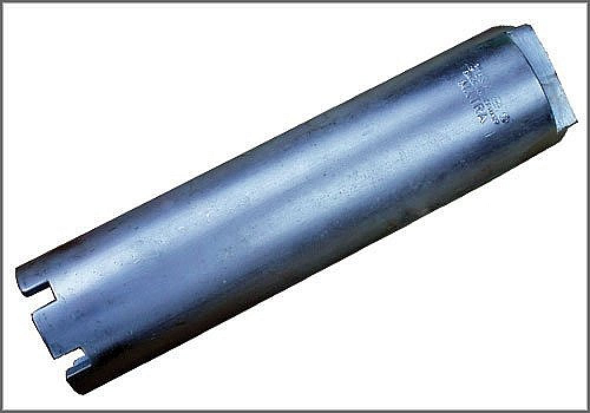

Aftermarket Tools
Transmission Socket Wrench
AST tool# 3183 A

For removing and installing the pinion bearing support ring in VW Golf, Jetta, New Beetle and some Passat with 096 and 01M automatic transmissions. For Hand Use Only!
- Steel Construction
- Made in Germany
- Call AST for Pricing
Contact AST for pricing.
Assenmacher Specialty Tools
1-800-525-2943